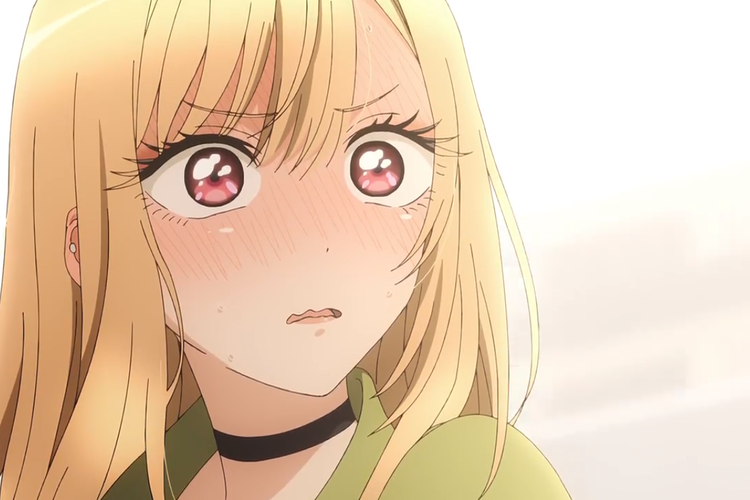

Sono Bisque Doll wa Koi wo Suru⇒Shojo
C'est une personne qui adore se cosplayer
Il veut devenir un grand artisan de poupées japonaises
Est une personne plutôt Solitaire:
La personne la plus populaire du lycée?

D’après vous, qui a ressenti des sentiments amoureux pour l’autre entre Wakana Gojo et Marine Kitagawa? Votre proposition:
Le premier cosplay était il de couleur noir?
A la fin de la première saison de Sono Bisque Doll wa Koi wo Suru, Marine Kitagawa déclare une phrase à Gojo Wakana lors d’un appel téléphonique dont Gojo s’était endormis sans entendre ses paroles. Quels étaient les mots prononcés par Marine?
Au début du manga, gojo se sentit comment en commençant à devoir prendre les mesures de marine afin de lui confectionner un costume?
One piece
Spécial East Blue

Qui est le premier ami que luffy se fait ?
Qui est le premier pirate que Luffy a affronté?
Dans quels objets nous rencontrons Luffy pour la première fois?
A quoi consiste le rêve d’Ussop ?
Qui est le 3eme compagnon de luffy à rejoindre l’équipage du chapeau de paille
Combien de jours Zoro a passé sans manger avant de rencontrer Luffy au début du manga?
Quels sont les inconvénients à manger un fruit du démon ? 2 Réponse à sélectionner
Nami devait rassembler une certaine quantité de Berry pour sauver son village des griffes d’arlong, l’homme Poisson, Quelle était cette sommes d’argent ?
Quelle est la chose que Sanji rêve de trouver ?
Comment s’appelle Le capitaine pirate qui a causé des ennui à Kaya l’amie d’ussop
Comment s’appelle Le personnage special creer par Eichiro Oda?
One piece
Spécial Grande Line

Comment s'appelle l’ami d'enfance qui lui était enfant de Nefertari Vivi ?
Quelle est la créature que les Chapeaux de paille rencontre lors de leur arrivé sur Grande Line au cape des jumeaux?
Qui s’est occupé de Laboon Pour ses soins Médical?
Qui a fait découvrir la médecine a Chopper?
Crocodile voulait s’emparer d’une arme antique, Quel est cette arme?
Quel est l’arc où Gold D Roger a laissé un message sur Un ponéglyphes?
En quoi consiste le CP9?
Comment s’appelle l’être antique surnommé le transporteur de pays que contrôlait Geko Moria ?
A Sabaody on n’y découvre certaine face caché pas très glorieuse comme... ?
.Une princesse tombe amoureuse de Luffy et a faillit mourir à cause du sentiment amoureux. Qui est-ce? Boa Hancock
Amazon Lily est une île réservé exclusivement de..,?


Black Clover
En quoi consiste le rêve de Yuno et Asta?
Comment S’apelle le capitaine du Taureau Noir ?
Qui est la compagnie de chevalier mages qui détient une grande renommée dans le royaume de Clover ?
Combien de pétale du trèfle possède le grimoire de Asta ?
Comment s’appelle la fille qui rejoint la compagny du taureau noir au même moment qu’asta?
^A un moment du manga Yuno obtient une magie élémentaire, laquelle??
Docteur Stone
Que s'est-il passé pour le monde ?
Senku, lors de sa pétrification en pierre faisait quelque chose, Qu’est ce que c’est ?
Quel est le but de Senku lors de sa sortie de son état de pétrification en pierre?
Comment s’appelle le liquide qui permet la dépétrification en pierre ?
Qu'utilisait Taiju pour se raser ?
Qui aime la science autant que Senku?

Quel est le rêve d'enfance de Senku ?
Quels sont les deux personnages qui ont des problèmes de vue?
Quelle est la boisson préférée de Asagiri Gen ?
Combien d'années sont passées depuis la pétrification ?

La sœur de Kohaku est?

Jujutsu Kaisen
Senku, lors de sa pétrification en pierre faisait quelque chose, Qu’est ce que c’est ?
Quel est le but de Senku lors de sa sortie de son état de pétrification en pierre?
Comment s’appelle le liquide qui permet la dépétrification en pierre ?
Qu'utilisait Taiju pour se raser ?
Qui aime la science autant que Senku?
Quel est le rêve d'enfance de Senku ?
Quels sont les deux personnages qui ont des problèmes de vue?
Quelle est la boisson préférée de Asagiri Gen ?
Combien d'années sont passées depuis la pétrification ?
La sœur de Kohaku est?